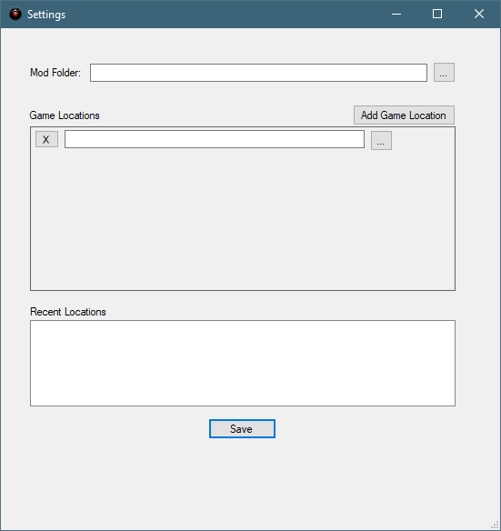
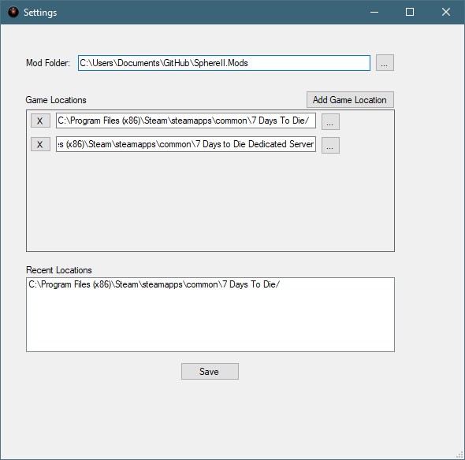
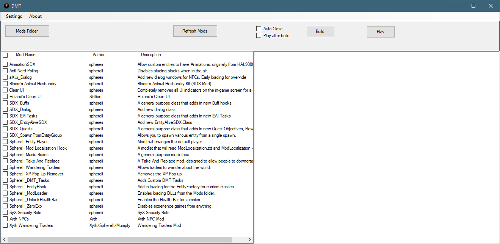
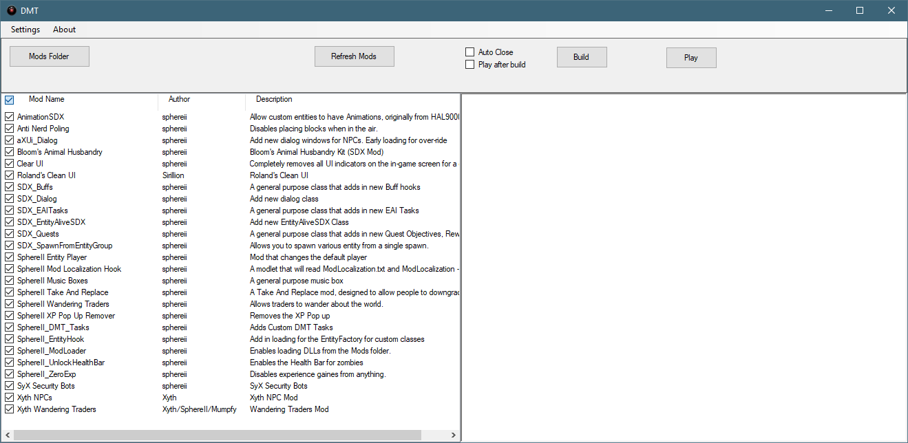
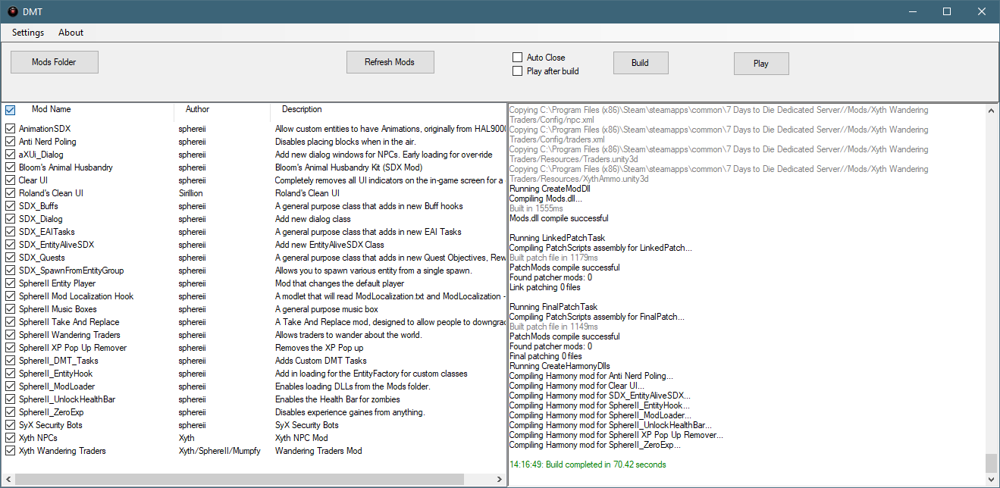

When first started, DMT does not have any mod listing and is not set up correctly.

Click on the Settings menu option

Mod Folder: This path should point to where your mods exists
Game Location: This path should point to where your 7 Days to Die folder exists.
You may click on the gray button with the three dots to open up a dialog box, or simply copy and paste the local path into the box.
If you want to add multiple game locations ( different versions, client vs dedicated, etc ), click on the Add Game Location to add a new spot.

Once you have added your information, click on Save

Click on the white empty check boxes for each mod that you want to include in your build.

To select all mods, click on the white by the Mod Name. Click again will deselect them all.

Created with the Personal Edition of HelpNDoc: iPhone web sites made easy